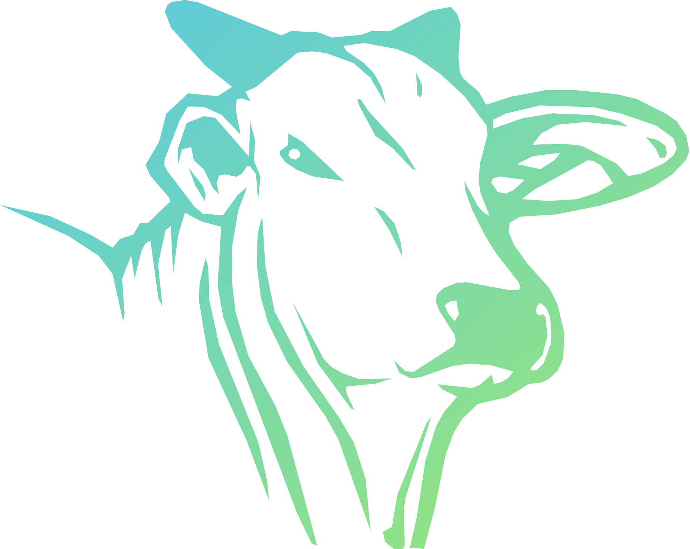

Controle de horas por projeto. Acesso apenas para usuários cadastrados.

Revise os registros antes de enviar. Registros já exportados serão atualizados, não duplicados.
Aguardando leitura dos registros…
A cor do projeto pinta as linhas e os blocos dele. As alterações são salvas automaticamente. Ao excluir um projeto, as atividades dele ficam como “Sem projeto”.
Seus dados ficam salvos na sua conta, na nuvem, e acompanham você em qualquer computador. O backup é opcional.
Escolha alguém na lista para abrir a conversa.
As conversas são individuais. As mensagens ficam salvas na conta do sistema.
Conectado como